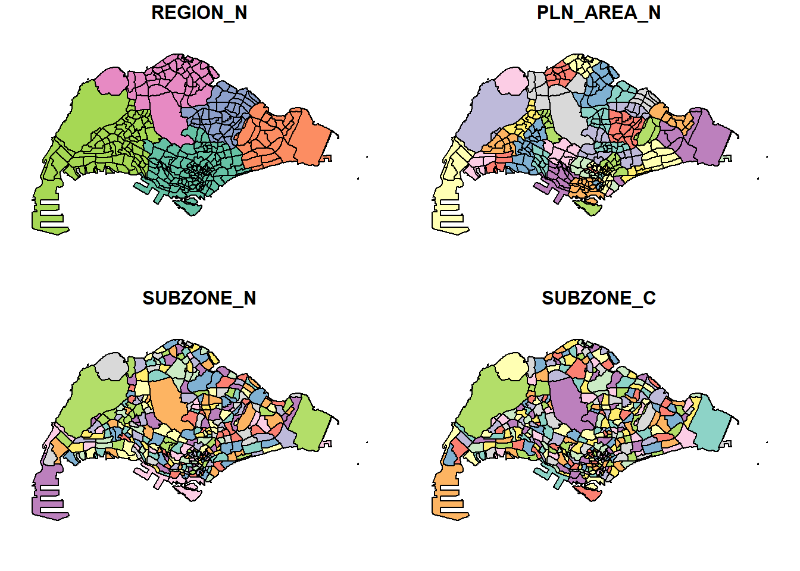
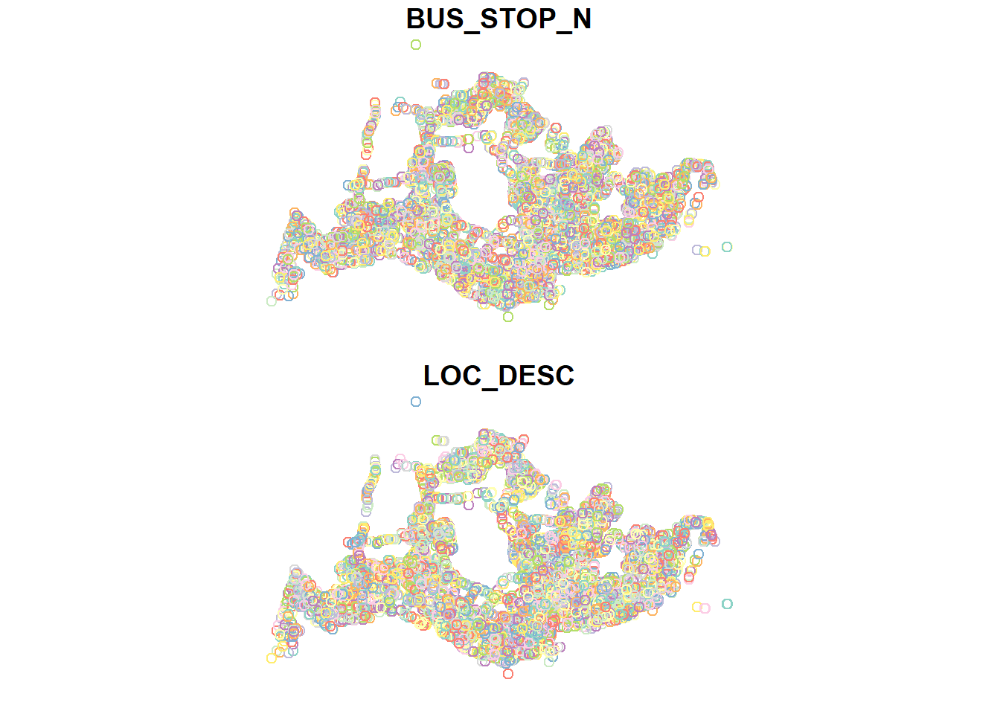
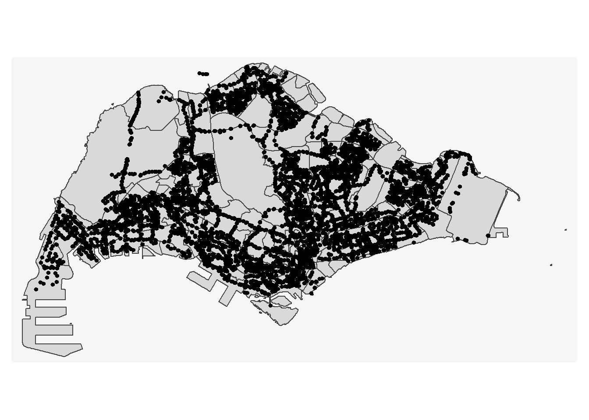
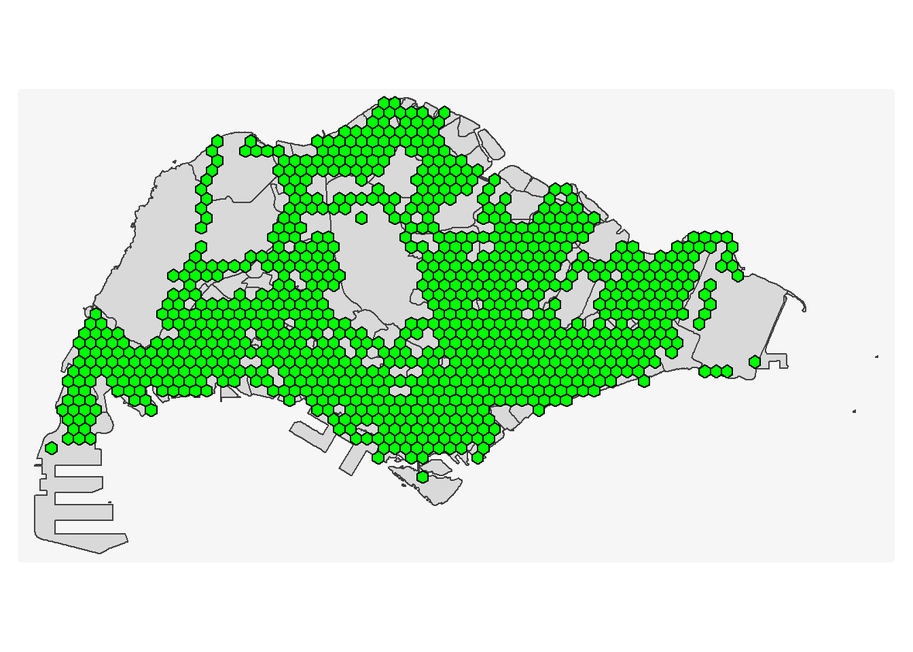

pacman::p_load(sf, tmap, tidyverse,knitr,sfdep,ggplot2)In-Class Exercise 6 - Kick Start for Take home 2
1 Load Packages
2 Import Data
2.1 Import mpsz19
mpsz19_sf <- read_rds("data/rds/mpsz.rds")
st_crs(mpsz19_sf)Coordinate Reference System:
User input: EPSG:3414
wkt:
PROJCRS["SVY21 / Singapore TM",
BASEGEOGCRS["SVY21",
DATUM["SVY21",
ELLIPSOID["WGS 84",6378137,298.257223563,
LENGTHUNIT["metre",1]]],
PRIMEM["Greenwich",0,
ANGLEUNIT["degree",0.0174532925199433]],
ID["EPSG",4757]],
CONVERSION["Singapore Transverse Mercator",
METHOD["Transverse Mercator",
ID["EPSG",9807]],
PARAMETER["Latitude of natural origin",1.36666666666667,
ANGLEUNIT["degree",0.0174532925199433],
ID["EPSG",8801]],
PARAMETER["Longitude of natural origin",103.833333333333,
ANGLEUNIT["degree",0.0174532925199433],
ID["EPSG",8802]],
PARAMETER["Scale factor at natural origin",1,
SCALEUNIT["unity",1],
ID["EPSG",8805]],
PARAMETER["False easting",28001.642,
LENGTHUNIT["metre",1],
ID["EPSG",8806]],
PARAMETER["False northing",38744.572,
LENGTHUNIT["metre",1],
ID["EPSG",8807]]],
CS[Cartesian,2],
AXIS["northing (N)",north,
ORDER[1],
LENGTHUNIT["metre",1]],
AXIS["easting (E)",east,
ORDER[2],
LENGTHUNIT["metre",1]],
USAGE[
SCOPE["Cadastre, engineering survey, topographic mapping."],
AREA["Singapore - onshore and offshore."],
BBOX[1.13,103.59,1.47,104.07]],
ID["EPSG",3414]]plot(mpsz19_sf)
2.2 Import BusStop shap file
The code chunk below uses st_read() of sf package to import LTA Bus Stop into R. The imported shapefile will be simple features Object of sf.
BusStop <- st_read(dsn = "data/LTADataMall",
layer = "BusStop") Reading layer `BusStop' from data source
`D:\ssinha8752\ISSS608-VAA\In-class_Ex\In-class_Ex06\data\LTADataMall'
using driver `ESRI Shapefile'
Simple feature collection with 5172 features and 2 fields
Geometry type: POINT
Dimension: XY
Bounding box: xmin: 3970.122 ymin: 26482.1 xmax: 48285.52 ymax: 52983.82
Projected CRS: SVY21#%>%
#st_transform(crs = 3414)
st_crs(BusStop)Coordinate Reference System:
User input: SVY21
wkt:
PROJCRS["SVY21",
BASEGEOGCRS["WGS 84",
DATUM["World Geodetic System 1984",
ELLIPSOID["WGS 84",6378137,298.257223563,
LENGTHUNIT["metre",1]],
ID["EPSG",6326]],
PRIMEM["Greenwich",0,
ANGLEUNIT["Degree",0.0174532925199433]]],
CONVERSION["unnamed",
METHOD["Transverse Mercator",
ID["EPSG",9807]],
PARAMETER["Latitude of natural origin",1.36666666666667,
ANGLEUNIT["Degree",0.0174532925199433],
ID["EPSG",8801]],
PARAMETER["Longitude of natural origin",103.833333333333,
ANGLEUNIT["Degree",0.0174532925199433],
ID["EPSG",8802]],
PARAMETER["Scale factor at natural origin",1,
SCALEUNIT["unity",1],
ID["EPSG",8805]],
PARAMETER["False easting",28001.642,
LENGTHUNIT["metre",1],
ID["EPSG",8806]],
PARAMETER["False northing",38744.572,
LENGTHUNIT["metre",1],
ID["EPSG",8807]]],
CS[Cartesian,2],
AXIS["(E)",east,
ORDER[1],
LENGTHUNIT["metre",1,
ID["EPSG",9001]]],
AXIS["(N)",north,
ORDER[2],
LENGTHUNIT["metre",1,
ID["EPSG",9001]]]]plot(BusStop)
2.3 Import CSV File
odbus <- read_csv("data/LTADataMall/origin_destination_bus_202508.csv")head(odbus,5)# A tibble: 5 × 7
YEAR_MONTH DAY_TYPE TIME_PER_HOUR PT_TYPE ORIGIN_PT_CODE DESTINATION_PT_CODE
<chr> <chr> <dbl> <chr> <chr> <chr>
1 2025-08 WEEKENDS/… 9 BUS 84671 84131
2 2025-08 WEEKENDS/… 13 BUS 10099 09048
3 2025-08 WEEKENDS/… 21 BUS 64601 64611
4 2025-08 WEEKENDS/… 16 BUS 53009 50029
5 2025-08 WEEKENDS/… 18 BUS 80051 70251
# ℹ 1 more variable: TOTAL_TRIPS <dbl>summary(odbus) YEAR_MONTH DAY_TYPE TIME_PER_HOUR PT_TYPE
Length:5876969 Length:5876969 Min. : 0.00 Length:5876969
Class :character Class :character 1st Qu.:10.00 Class :character
Mode :character Mode :character Median :14.00 Mode :character
Mean :14.07
3rd Qu.:18.00
Max. :23.00
ORIGIN_PT_CODE DESTINATION_PT_CODE TOTAL_TRIPS
Length:5876969 Length:5876969 Min. : 1.00
Class :character Class :character 1st Qu.: 2.00
Mode :character Mode :character Median : 4.00
Mean : 20.89
3rd Qu.: 13.00
Max. :34148.00 tm_shape(mpsz19_sf)+
tm_polygons()+
tm_shape(BusStop)+
tm_dots()+
tm_layout(bg.color = "#f6f6f6",frame = FALSE)+
tm_legend(frame = FALSE)
Notice there are several bus stops outside Singapore (JB)
BusStop <- st_transform(BusStop,crs=3414)
BusStop_in_SG <- st_join(BusStop,mpsz19_sf,
join = st_within, left = FALSE)
Important

The error message indicates that the projected CRSs for BusStop & mpsz19_sf are different. Therefore, we need to transform the CRS of BusStop into 3414
tm_shape(mpsz19_sf)+
tm_polygons()+
tm_shape(BusStop_in_SG)+
tm_dots()+
tm_layout(bg.color = "#f6f6f6",frame = FALSE)+
tm_legend(frame = FALSE)Notice that the bus stops in JB have been removed!
2.4 Derive Analytical Hexagon
hexagon <- st_make_grid(mpsz19_sf,
cellsize = 700, # the radius is 700, for take-home 2 should be 375m
what = "polygon",
square = FALSE) %>% # won't form squares
st_sf() # conver the result into sf table format
hexagonSimple feature collection with 3797 features and 0 fields
Geometry type: POLYGON
Dimension: XY
Bounding box: xmin: 1967.538 ymin: 21044.33 xmax: 56567.54 ymax: 50951.07
Projected CRS: SVY21 / Singapore TM
First 10 features:
geometry
1 POLYGON ((2317.538 21650.55...
2 POLYGON ((2317.538 22862.98...
3 POLYGON ((2317.538 24075.42...
4 POLYGON ((2317.538 25287.85...
5 POLYGON ((2317.538 26500.29...
6 POLYGON ((2317.538 27712.72...
7 POLYGON ((2317.538 28925.16...
8 POLYGON ((2317.538 30137.6,...
9 POLYGON ((2317.538 31350.03...
10 POLYGON ((2317.538 32562.47...The hexagon above contains only one column with polygon geometry, lacking an unique ID
2.4.1 Filter hexagons with bus stops
The code below will return 0 or >0. 0 means that their are bus stops within the hexagons.
Simple feature collection with 6 features and 1 field
Geometry type: POLYGON
Dimension: XY
Bounding box: xmin: 1967.538 ymin: 21650.55 xmax: 2667.538 ymax: 28521.01
Projected CRS: SVY21 / Singapore TM
geometry n_collisions
1 POLYGON ((2317.538 21650.55... 0
2 POLYGON ((2317.538 22862.98... 0
3 POLYGON ((2317.538 24075.42... 0
4 POLYGON ((2317.538 25287.85... 0
5 POLYGON ((2317.538 26500.29... 0
6 POLYGON ((2317.538 27712.72... 0hexagon <- filter(hexagon,n_collisions>0)2.4.2 Assign IDs to Each Hexagon
hexagon <- hexagon %>%
select(,-n_collisions) # "-" means drop the n_collisions column
hexagon$HEX_ID <- sprintf(
"H%04d", seq_len(nrow(hexagon))) %>%
as.factor()
kable(head(hexagon))| geometry | HEX_ID |
|---|---|
| POLYGON ((3717.538 27712.72… | H0001 |
| POLYGON ((4417.538 30137.6,… | H0002 |
| POLYGON ((4767.538 28318.94… | H0003 |
| POLYGON ((4767.538 29531.38… | H0004 |
| POLYGON ((4767.538 30743.81… | H0005 |
| POLYGON ((4767.538 31956.25… | H0006 |
tm_shape(mpsz19_sf)+
tm_polygons()+
tm_shape(hexagon)+
tm_fill(col= "black",fill="green")+
tm_layout(bg.color = "#f6f6f6",frame = FALSE)+
tm_legend(frame = FALSE)
2.5 Prepare Trip Generation Data
trips <- odbus %>%
select(c(ORIGIN_PT_CODE,DAY_TYPE,TIME_PER_HOUR,TOTAL_TRIPS)) %>%
rename("BUS_STOP_N" = ORIGIN_PT_CODE) %>%
rename("HOUR_OF_DAY" = TIME_PER_HOUR) %>%
rename("TRIPS" = TOTAL_TRIPS)
trips$BUS_STOP_N <- as.factor(trips$BUS_STOP_N)
kable(head(trips))| BUS_STOP_N | DAY_TYPE | HOUR_OF_DAY | TRIPS |
|---|---|---|---|
| 84671 | WEEKENDS/HOLIDAY | 9 | 3 |
| 10099 | WEEKENDS/HOLIDAY | 13 | 31 |
| 64601 | WEEKENDS/HOLIDAY | 21 | 3 |
| 53009 | WEEKENDS/HOLIDAY | 16 | 10 |
| 80051 | WEEKENDS/HOLIDAY | 18 | 4 |
| 70031 | WEEKDAY | 14 | 1 |
bus_hex <- st_intersection(
BusStop, hexagon) %>%
st_drop_geometry() %>%
select(c(BUS_STOP_N, HEX_ID))
kable(head(bus_hex))| BUS_STOP_N | HEX_ID | |
|---|---|---|
| 3092 | 25059 | H0001 |
| 241 | 26379 | H0002 |
| 2439 | 25751 | H0003 |
| 2554 | 25761 | H0003 |
| 2650 | 25719 | H0004 |
| 2651 | 25711 | H0004 |
trips <- inner_join(trips, bus_hex)
kable(head(trips))| BUS_STOP_N | DAY_TYPE | HOUR_OF_DAY | TRIPS | HEX_ID |
|---|---|---|---|---|
| 84671 | WEEKENDS/HOLIDAY | 9 | 3 | H0852 |
| 10099 | WEEKENDS/HOLIDAY | 13 | 31 | H0430 |
| 64601 | WEEKENDS/HOLIDAY | 21 | 3 | H0701 |
| 53009 | WEEKENDS/HOLIDAY | 16 | 10 | H0588 |
| 80051 | WEEKENDS/HOLIDAY | 18 | 4 | H0666 |
| 70031 | WEEKDAY | 14 | 1 | H0698 |